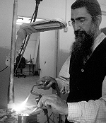

The Avoda of Refinement
R’ Yitzchak Deizada is a professional goldsmith who makes Chabad and Geula-styled products. He traveled as far as Australia to sell his creative artwork, and it was there that he discovered the light of Yiddishkait and Chassidus. In addition, he now works with young people in need of greater spiritu
Translated by Michoel Leib Dobry

R’ Yitzchak lived for many years in Tzfas and Eilat, where he made his living running several successful art galleries. His work there was not limited to the sale of jewelry and silver items; his galleries also served as centers for spreading the wellsprings of Chassidus and the announcement of the Redemption. In his gallery located in Eilat’s prestigious Herod’s Hotel, he operated a video machine with films of the Rebbe Melech HaMoshiach running twenty-fours a day, six days a week. People would come in to put on t’fillin and listen to a talk about the weekly Torah portion.
Today, R’ Yitzchak lives with his family in Lud’s Shikun Chabad community.
You can find R’ Yitzchak with his wares at the various Chabad gatherings throughout Eretz Yisroel. He clearly sees this work as a form of shlichus. Among his decorative merchandise, one can find gold and silver jewelry items containing an element of Redemption. However, his crown jewel, the greatest source of pride in his activities, is the work he does with youngsters at the learning center he established in Kfar Chabad with the Rebbe’s bracha. “There are kids who have a very low sense of self-esteem, and every experience of success does wonders for them. When they come here and succeed in creating a piece of jewelry or silverware with the proper direction and guidance, their confidence soars heavenward.”
TWO LIFESAVING EXPERIENCES
Deizada spent his childhood and teenage years in a traditional home in Ashdod, where they would make Kiddush on Friday night and then sit down to watch television or engage in their preferred pastimes along the seashore. “As a boy, I loved the sea very much, and I was diving already at a young age. I loved the beautiful sights on the ocean floor – the coral reef, the colorfulness, but above all, the quiet of the underwater world. While diving, I used to fish from time to time. The wonders of creation always seemed to fascinate me.
“One day, my uncle arrived from New York for a visit. Naturally, we went together to my favorite place of leisure – the seashore. We put our heads in the water to see which one of us could stay underneath the longest without breathing. When we finally came up for air, we noticed that we were very far from the shore. We tried to head back, but we felt ourselves being dragged from one wave to the next. Whirlpools swept us underwater. I saw my uncle starting to drown and I tried to save him. A feeling of sheer terror consumed me.
“At this point, I suddenly gathered my strength (I don’t know from where) and I started to swim on my back as I pulled my uncle after me. The sea soon calmed, and shortly thereafter, we got back to the shore, tired, broken, and totally exhausted. Ever since that day, I’ve had a saying that I repeat like a mantra to all those around me: ‘The Creator of the World gives more than one chance for life.’ However, in practical terms, this incident did not bring me to any renewed or more profound way of thinking. Perhaps this was because I didn’t know then what to think.
“This was not the only case where my life had been saved from the depths of the sea. During my vacation prior to army induction, I was saved a second time. Together with my friends, I bought a large rubber raft and we would float on it near the shore. One morning, I went up to Givat Yona, located near the Mediterranean coast, and there I saw a ship anchored along the shoreline. Thinking that it was just a short distance away, I decided to take my raft and float out to the ship. I swam and swam, certain that I would reach my destination in a matter of minutes. However, as time passed, I soon realized that I had made a mistake. I had been swimming for an hour and an half, but the ship was still off in the distance. When I finally reached the ship’s stern, the Turkish crew came down and brought me apples and water. They couldn’t fathom why anyone would be so crazy to swim all the way over from the shore. I didn’t have an ounce of strength left. The sun was beating down on me, and my head was pounding.
“I naively thought that the way back would prove far easier, but the waves took me in every direction. After floating for nearly four hours, I didn’t seem to be any closer to the shore. At a certain point, the raft capsized and I was forced to swim without support. At first, I was engulfed by fear, but when I finally saw the shoreline, I realized that I was getting closer. Then, after another two hours of swimming, I finally reached the coast at Nitzanim, more than four miles from my starting point in Ashdod.”
When he had recovered a bit, Deizada drank a large quantity of water to relieve his state of dehydration. Then, he spontaneously began to dance in a way that he’ll never forget as long as he lives. “I danced with joy over the fact that I was alive, and people passing by joined me in the dancing. The whole scene was most unusual, even for me – a lonely youth who was just looking for a little tranquility.”
MIRACLES IN THE COMMAND BUNKER
When R’ Yitzchak reached the age of military conscription, he joined the Israel Defense Forces in the air intelligence corps, where he served during the Persian Gulf War and witnessed revealed miracles alongside his fellow soldiers. “At the first air-raid siren, all staff members immediately went down to the command bunker, and we tracked all the satellites and radar screens to get a clear picture of where the Scud missiles were falling. All the best and the brightest were there in the bunker and they all spoke in rational terms, with no mention of revealed miracles. The enemy in Baghdad knew exactly where to aim his rockets. I remember how one missile fell near the Haifa refineries, another near Government House in Tel Aviv, and yet another near the Communications Ministry at Mikveh Yisroel. There was even a missile that landed on the headquarters of the Bezeq telephone company, containing a ton and a half of explosives, but it failed to detonate. We watched the radar, saw where each missile landed, and were utterly amazed. Every scud strayed off course by a few hundred yards and missed its target. In those cases, where the missile did hit its target, it didn’t explode. It was impossible not to be astounded. Even those labeled as non-believers started to believe.
“The only thing was that I still didn’t know what to call such phenomena. The Name of G-d did not come up in any discussion. I remember the sense of panic that reigned in the command bunker as soon as people realized that the Iraqis knew so precisely where to fire. Afterwards, their tone became one of astonishment, as they watched miracle after miracle unfold.”
During his military service, Deizada started learning the art of goldsmithing. His dream was to design gold, silver, and diamond jewelry. After his army discharge, he became a merchant on Tel Aviv’s street of artists, Rechov Nachalat Binyamin. “When I was still a young man, I was drawn into the world of artistic design, and I chose to become a goldsmith.”
After two years in Tel Aviv, he had saved enough money to achieve his dream: to fly to Australia and sell his merchandise to the local population. During that period of time, the state of the economy was rather poor. As a result, the authorities were denying entry to tourists caught dealing in matters of trade, charging that they were taking money out of the country. Many of his friends warned him that this was not the time to travel there, but he was determined to fulfill his dream. With a backpack filled with his goldsmith equipment and a large quantity of jewelry items he had recently created, he boarded a plane for Thailand. From there, he made his way to Australia, hoping against hope that he wouldn’t be stopped by the customs officials.
“At the time, I had the outward appearance of a freak. During the flight to Australia, I literally felt my knees shaking. All that I needed was to find myself after this long journey on a flight back to Eretz Yisroel, when the border patrol realized that I was coming to engage in trade. At a certain point, I made a promise to G-d that if I managed to receive permission to enter the country, the first thing I would do would be to pray in a synagogue. To this day, I have no idea why I made such a decision. Except for Yom Kippur as a boy, I had never been inside a synagogue in my life.
“As I had feared, I was stopped at the customs counter. I was certain that they would send me back as they had done to so many other good people who had been caught under similar circumstances. Yet to my great surprise, after a brief discussion with the customs officials, they decided to permit me to enter Australia.”
A REAWAKENING OF THE SOUL
The first stop on his journey was Bondi, a suburb of Sydney and home to a large cross-section of the local Jewish community. On that very first day, he remembered the promise he had made and immediately went to find a synagogue. “As I was searching, I went into a building and saw a ‘Chabad House’ sign on one of the doors. I knew nothing about Chabad at the time, but since the sign was in Hebrew, I simply assumed that it was a synagogue. I knocked on the door and a woman came out. She explained to me that this was a private home, but she directed me to a shul located up the hill.
“The synagogue was very impressive in both its size and its splendor. In one corner, there stood a young man wearing a Russian-style cap. I went up to him and asked for a siddur. After he brought me one, I went into another corner to pray. I discovered later that this bachur was R’ Yosef Arzuan, today a melamed in Tzfas. Since I didn’t know how to daven, I just opened the siddur and started to read. Then, something happened to me that I had never experienced before: I burst into heavy sobs! I had never cried that way in my life. This was a cry emanating from deep within my soul. I said to myself: ‘Why am I crying? What am I, a baby? There’s nothing to be sad about; everything’s fine. What’s all this crying for?’ But the tears kept coming. After drying my eyes, I thought: why did I have to come all the way to Australia to pray, when there’s a synagogue across the street from my parents’ house in Ashdod?
“I left the synagogue a totally different person than when I came in. It would take another several months before I would complete my kiruv process, but this incident marked the turning point.
“The community in Sydney was very warm and friendly, and people would insist that I come to their homes for the Shabbos meals. I was amazed to see how Chassidim would argue with each other for the privilege of hosting me. I felt deeply moved each Shabbos by the marvelous sense of closeness that took expression around the table. Even when I would go out for some fun and recreation after the Shabbos meals, I realized that true joy was found not outside with all the hubbub, but inside with the peace of Shabbos.
“I began to feel a sense of emptiness from all the useless pursuits of this world, but I had previously been unfamiliar with any viable alternatives. Now that my soul was reawakening, I realized how all this supposed freedom was actually vanity and nothingness.
“I became very close to the T’mimim in Sydney who had come on shlichus to learn in the yeshiva and conduct outreach activities. The Jewish pride within these young men was most impressive. Around this time, I began to make a living from selling jewelry. After a few months, I left Sydney for Melbourne at the invitation of friends.
“On my first Friday in Melbourne, I came down out of my room in the attic with plans to explore the city. Suddenly, I lost my footing and fell down the stairs. My friends came and took me to the Jewish doctor, who treated my injured hands and then put them in a cast. When I lay down to go to sleep, I had time to think about how I fell, and I came to the conclusion that all this happened because I was planning on desecrating Shabbos. Since I already knew the special nature of Shabbos, I was punished for it. From that moment on, I became a regular guest in Rabbi Gutnick’s shul on both Shabbasos and weekdays. Rabbi Serebryanski was a great help to me in the process of becoming closer to Torah observance. I bought a pair of t’fillin, and within a short period of time, I included going to the mikveh and participating in Rabbi Shlomo Sabach’s Tanya class in my daily schedule. Only after these morning rituals and davening Shacharis did I start my workday.
“One of the most memorable experiences from my time in Melbourne was with the shliach Rabbi Yitzchak Dovid Groner, of blessed memory, with whom I had a very close relationship. He was a Chassid with a tremendous presence. He always spoke clearly and firmly, but also with great warmth. Every time he would see me, he would look at me and say, ‘Nu…’ I knew that he was referring to my long braids. It wasn’t easy for me to part with them, and so I just smiled silently. However, Rabbi Groner would not relent. This kept up for a period of several months.
“It was only after Tisha B’Av that I finally got my hair cut. The next day, I came to shul with a haircut like everyone else. When Rabbi Groner saw me, his face lit up. He came up to me and gave me a big hug and kiss. I felt good that I had given him some nachas.
“I decided to spend Shavuos the following year, 5752, in Sydney. Returning to Bondi, I met several of the yeshiva bachurim who had come since my last visit and were now actively involved in their shlichus. During that time, all the talk about Moshiach was at a fever pitch with a great deal of shturem and publicity. There was a powerful feeling in the air that Melech HaMoshiach would reveal himself at any moment. In hindsight, it is clear that all the discussions about the Redemption are what brought me closer to Chabad and the Rebbe.
“While I already knew about the concept of a Rebbe and Chassidus, these bachurim explained to me for the first time what a Rebbe really is, his role in the world, the purpose behind the teachings of Chassidus, and why the Rebbe sends out shluchim. We would receive daily faxes with detailed reports on what was happening in 770. They constantly referred to the Rebbe as a king, and I was amazed to know that the Jewish People have a king. I suddenly felt that this was something that didn’t just relate to the time of the Prophets; this was part of a Divine process taking place right now.
“After a brief period of time together with these bachurim and the unique atmosphere that pervaded around them, I decided to change from a mekurav to a baal t’shuva. My first decision in my new status was to wear my tzitzis out.”
A CHASSIDIC GALLERY IN A PRESTIGIOUS EILAT HOTEL
After Sukkos 5753, R’ Yitzchak decided to return to Eretz HaKodesh. Shortly before his departure, he spoke to Rabbi Leshes, one of the Chabad rabbanim in Australia. He asked him to inquire about a baal t’shuva yeshiva for him, and Rabbi Leshes referred him to Tzfas. “I was very happy to find out that there was a Chabad yeshiva in Tzfas. Before flying to Australia, I had visited Tzfas, and even immersed in the Ari’s mikveh…
“I had considered the possibility of going back to Nachalat Binyamin Street and operating my old business there, but ‘there are many thoughts in a man’s heart, and G-d’s plan will stand.’ The rosh yeshiva, Rabbi Yosef Yitzchak Wilschansky, greeted me warmly upon my arrival. I learned in the yeshiva for three years, building my Chassidic world in a most profound and inner fashion.
“I didn’t miss a single class with the mashpia, Rabbi Moshe Ehrenstein. His shiurim in Chassidus were like cold water for a tired and thirsting soul. The seifer that had the greatest influence upon me in those days was Derech Mitzvosecha…”
He spent Tishrei 5754 in 770, and in Adar 5756 he married his wife, whose path to Yiddishkait and Chassidus had also passed through Tzfas at the Machon Alte Institute. Their wedding took place in Kfar Chabad, and they initially settled in Tzfas. R’ Yitzchak learned for a year in the “Tzemach Tzedek” kollel, and then opened an art gallery in Tzfas’ famed “Artists’ Quarter.” Business was booming, until the wave of terrorist attacks in Eretz Yisroel brought local tourism to a virtual standstill. Many branches within the tourism market collapsed. “Gallery after gallery closed its gates due to the very difficult economic situation,” R’ Yitzchak Deizada recalled. “We decided to take a vacation with the whole family, something that we had not done for many years. We went down to Eilat, where my wife’s parents and family live. Eilat simply intrigued me. From the common Israeli point of view, Eilat is a city of self-indulgence. In reality, this is a very traditional city. There are almost no cars driving through Eilat on Shabbos; you can feel a totally different atmosphere there.
“Before our return to Tzfas, Rabbi Uzi Kaploun, director of the Chabad kindergartens in Eilat, asked my wife if she would serve as a substitute for one of the teachers. After working there for a while, she was offered a full-time position. We asked the Rebbe what we should do, and we received an answer in the Igros Kodesh addressed to Rabbi Yosef Hecht from Eilat. We couldn’t have hoped for a clearer answer than that. I closed the gallery in Tzfas, and we looked for an appropriate place to open a gallery in one of the local hotels. After a lengthy search, I found that the prominent Herod’s Hotel would be most suitable. With the assistance of Rabbi Hecht, I rented a storefront in the hotel where I could sell my goods. The store also served as an ideal location for spreading the wellsprings of Chassidus. We set up a video machine in the show window for screening clips of the Rebbe MH”M. Many people would come in and tell me about their experiences with the Rebbe, even Gentiles.”
IN THE ART OF THE SOUL, YOU MUST BE A MAVEN
After more than ten years in Eilat, the Deizada family returned to the central part of the country, establishing their residence in Lud’s Shikun Chabad neighborhood. In response to letters that he had placed in Igros Kodesh over the years, he had been privileged to receive several amazing answers dealing with the education of Jewish children. Yet, R’ Yitzchak didn’t believe that he possessed the ability or the talent to be an educator. “My skills are in goldsmithing,” he would explain. “What possible connection did I have to the field of education? I tried to find some other message in these letters to answer the questions that I placed in the seifer.
“Over the years, I worked with children who had special needs. When we were living in Tzfas, there was a yeshiva for American boys who had veered off the path of Torah and mitzvos, headed by Rabbi Yaacov Orimland. Rabbi ‘O’ would periodically send his students to my gallery and I would put them to work. In this manner, I would teach them about my trade, as I spoke to them about G-d, the Rebbe, Torah and mitzvos. In Eilat, the head of the local yeshiva, Rabbi Erez Bendetovitz, would also send me young dropouts who had come his way. I would work with them while we talked about matters of faith. I call this ‘soul therapy’. Thus, when I was offered a place in Kfar Chabad to work with young people, I remembered the Rebbe’s letters and my previous experiences. I jumped at the opportunity.
“These youngsters came to me on a daily basis, and I would teach them about goldsmithing. This was a source of much help to them, as I showed them how valuable they really were. They saw how they could be involved in a worthwhile profession that seems difficult and complex, yet where they could have much success. Such achievement increased the level of their self-confidence, and as it grew, they stopped looking for satisfaction in inappropriate places. I saw this every step of the way. Every success built another positive layer upon their character. These were good Jewish souls with amazing abilities.
“Art was a tool for them to open a new door. Slowly but surely, it led to a totally different approach to life, filled with assurance and confidence. I consider this to be a shlichus in every sense of the word. Since I have begun working with them, I have written to the Rebbe sixteen times on a variety of subjects, and every answer that I received related to the issue of educating young people. The Rebbe attributed great importance to this matter, and I have derived much satisfaction from my work. When a boy gets frustrated during the first class and says, ‘I can’t do this’, he is essentially testing to see how much I believe in him. With a lot of love and warmth, I instill in him a little faith in himself. After a few classes, he produces a marvelous piece of merchandise. In such a case, there’s no one happier than me.”
MAKING GOLD, SILVER, AND BRASS
In addition to his intensive work with young people at the learning center he established in Kfar Chabad, R’ Yitzchak is also involved in manufacturing creative Jewish and Chabad products. “In the past, I would make standard items from silver, gold, and other raw materials that we regularly use. Then, I once wrote to the Rebbe and received an answer that has served as my guide to this day. In his reply, the Rebbe asked why I am just keeping watch over other vineyards when I should also be watching over my own vineyard, the vineyard of Chabad. I realized that the Rebbe also wants me to deal periodically with the manufacturing of products appropriate to Chabad concepts brought in the teachings of Chassidus.
“Recently, we produced a Kiddush cup that we call ‘Der Alter Rebbe’s Becher’. It created a virtual revolution, and the first set went like hotcakes. This is a goblet that contains one hundred and sixteen grams, as per the halachic ruling of the Alter Rebbe (according to Rabbi Zalman Shimon Dworkin, of blessed memory, mara d’asra of Crown Heights). Rabbanim and mashpiim have blessed and thanked me, and even bought several of the goblets for themselves. We had previously produced an eight-stringed violin called ‘Kinor Yemos HaMoshiach.’ Another item we created is ‘Farbrengen’ – a piece of jewelry made from several precious stones of various shapes and colors, meant to symbolize the different types of souls, all hanging on a chain shaped like a farbrengen table. This jeweled chain has been one of our more successful items. Even Gentiles, l’havdil, have been quite impressed by it, especially after they grasp its underlying concept. Our most recent production is a 770 medallion covered in pure gold, which we have aptly called ‘770 Shel Zahav.’”
As a goldsmith who learns Chassidus and is connected to the Rebbe, his identity as an artist is completely redefined. “Prior to my attachment to the path of Chassidus, I had been like all other goldsmiths. I sat in a corner on Nachalat Binyamin Street in Tel Aviv and dealt with my craft. Today, I am naturally somewhere else entirely. The difference is tremendous, and it comes only to someone who is connected to the Rebbe. A regular goldsmith simply desires to make a living through his work, and therefore, he’ll make anything that will bring him money. A Chassidic goldsmith constantly thinks about how he can utilize his talents and his work to instill G-dliness and a Jewish Chassidic message in the world. This is what I am striving to achieve. This takes expression in the form of artistic creation and the sense of shlichus with the people I seek to help.”
A MESSAGE FROM THE REBBE
R’ Yitzchak Deizada: A few years ago, when we were living in Eilat, our family had an idea. Since it was not possible to obtain a chicken in the city on Erev Yom Kippur for the traditional Kaparos ceremony, some people simply fulfilled the custom by using a fish or money. However, because there were many who wanted to do it on a chicken, we decided to buy one and made preparations for a proper Kaparos.
To my great surprise, dozens of people who heard about the only chicken in Eilat streamed into our house on the night of Erev Yom Kippur. Local residents, Chabad Chassidim, friends, and others we had met that morning for the first time, came knocking at our door throughout the wee hours of the morning. Everyone wanted to do Kaparos the right way.
However, there were those who came to me with complaints regarding this matter, and this bothered me very much. I felt burdened by this sense of disapproval all night long, and I eventually decided to ask the Rebbe, Melech HaMoshiach, to send me a sign of reassurance.
A few minutes later, my daughters came to tell me that a strange man wanted to come in the house. I went over to the gate and saw one of my acquaintances, a taxi driver, whose long hair and earrings appeared very strange to my impressionable daughters. “I came to do Kaparos,” he told me quite matter-of-factly. I brought him in the house and gave him the chicken. After he finished Kaparos, he wanted to give tz’daka, and I pointed to the pushka for the local yeshiva. “But I don’t have any money on me,” the cab driver suddenly remembered. “I’ll go to an ATM machine to withdraw some money, and I’ll be right back.”
He returned after a few minutes and placed a sum of money into the pushka. Then, he unexpectedly handed me a dollar bill and said, “This is for you.” I took the dollar bill and suddenly noticed there was something written on it: “The 18th of Tishrei 5752 with Lekach.” I immediately realized that this was a dollar from the Rebbe. “How did you get this?” I asked him, and he told me a most interesting story:
“One night a few years ago, I stormed out of my house after a particularly unpleasant quarrel with my wife. As I was driving my cab, I suddenly found myself asking G-d for a sign that I should have shalom bayis. A few minutes later, I picked up a customer and took him in my cab to his desired destination. As he got out of the cab, he suddenly realized that he had no money. He then proceeded to give me five dollar bills, each one bearing a different handwritten message. A Chabad friend explained to me that these are dollars given out by the Rebbe on different occasions. Written on three of these dollars were the words ‘L’Shalom Bayis’… This was all I needed to understand that my request had been fulfilled.
“Today, these three dollars hang on a wall in my home, and thank G-d, there has been peace and tranquility there ever since,” the cab driver said. “This dollar bill, the fourth of the five, I have decided to give you today as a gift in honor of the holiday. I know that you’ll appreciate it.”
I was beside myself with shock and excitement. The Rebbe had sent him a sign, and I now felt through him that the Rebbe was giving me a sign as well…
Nosson Avrohom. "The Avoda of Refinement." Beis Moshiach, no. 837 (June 12, 2012).